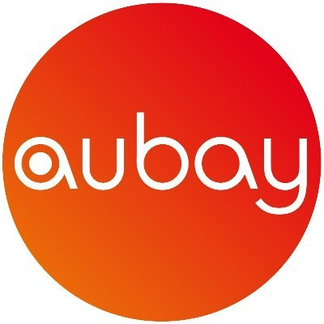
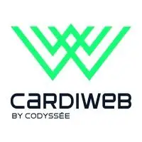
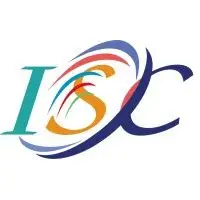
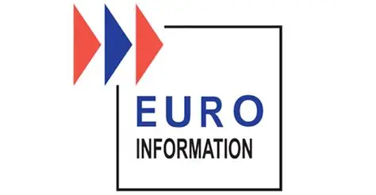

Expérience chez Cardiweb
Présentation de l'entreprise
Cardiweb est une entreprise d'environ 80 personnes, située à Opéra dans Paris. Elle propose des services de développement d'application mobile et web pour de nombreuses entreprises. Elle est spécialisée dans le développement d'application Smart Office. Parmis ses clients on peut trouver : Louis Vuitton, France Billet, Le Point, ....
Pour une durée de 6 mois, j'ai réalisé un stage en tant que développeur front en ReactNative. J'ai développé de nouvelles fonctionnalités ou améliorer des existantes pour des applications mobiles Android et IOS. Lors de cette expérience j'ai travaillé avec la méthodologie Agile, dans une équipe de 10 personnes. Parmis cette équipe on trouvait des développeurs back, développeurs front, product owner, chef de projets.
Liste des technogolies :
Liste des outils :

Expérience chez ISC
Présentation de l'entreprise
ISC est une entreprise d'une quarantaine de personnes située à la Garenne-Colombes. Elle produit des outils d'aide à la mise en production. Ses clients principaux sont des banques et des assurances comme BNP Paribas
Pour une durée de 4 mois, j'ai réalisé un stage en tant que développeur front en C++. L'entreprise souhaitait refondre un de ces outils qui n'était utilisable qu'en ligne de commande pour en faire une application grpahique.
Pour mener a bien ce projet, j'ai dut prendre connaissance de l'outil existant, réaliser un cahier des chargres, développer l'outil, faire une documentation et travailler avec les personnes qui l'utiliseraient pour obtenirs des retours utilisateurs.
Liste des technogolies :
Liste des outils :

Expérience chez EID
Présentation de l'entreprise
EID est une la filiale technologique du Crédit Mutuel, c'est elle qui responsable du développement et de la maintenance des outils informatique de la banque. La filaile compte plusieurs centaines de personnes avec de nombreux corps de métiers : développeurs, data analyst, business analyst, ....
Pour la durée de 2 ans, j'ai travaillé sur la refonte de l'outil utilisé par les banquiers dans le domaine de l'affacturage. J'ai réalisé une première année en tant que développeur COBOL, puis une deuxième année en tant que rédacteur de spécification technique.
Liste des technogolies :
Liste des outils :